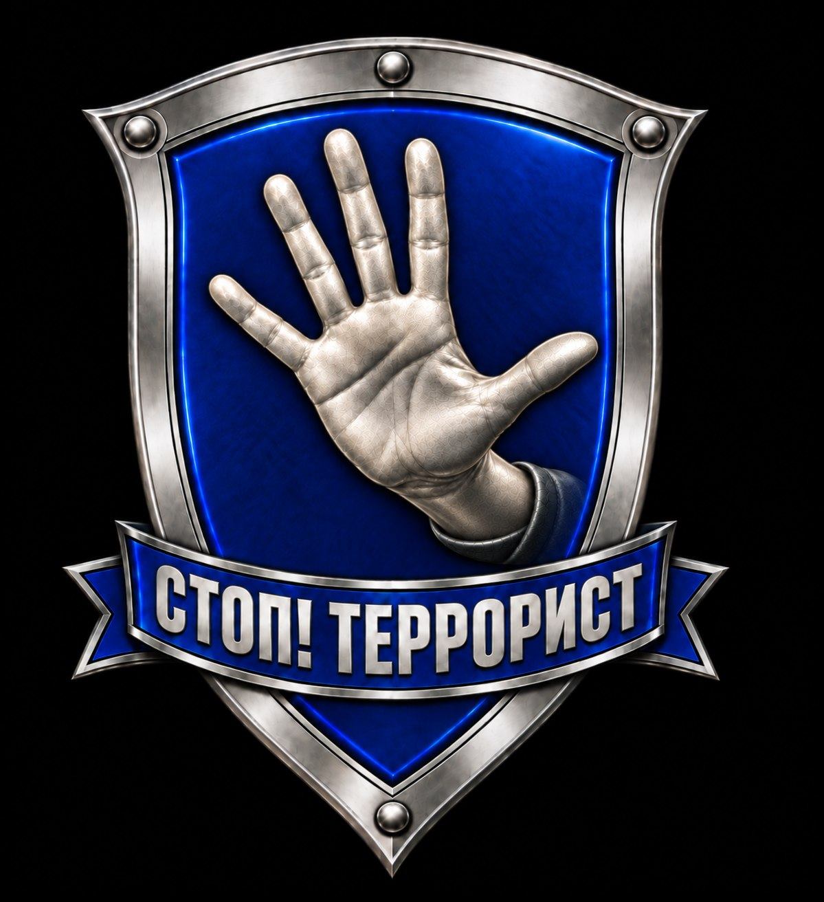
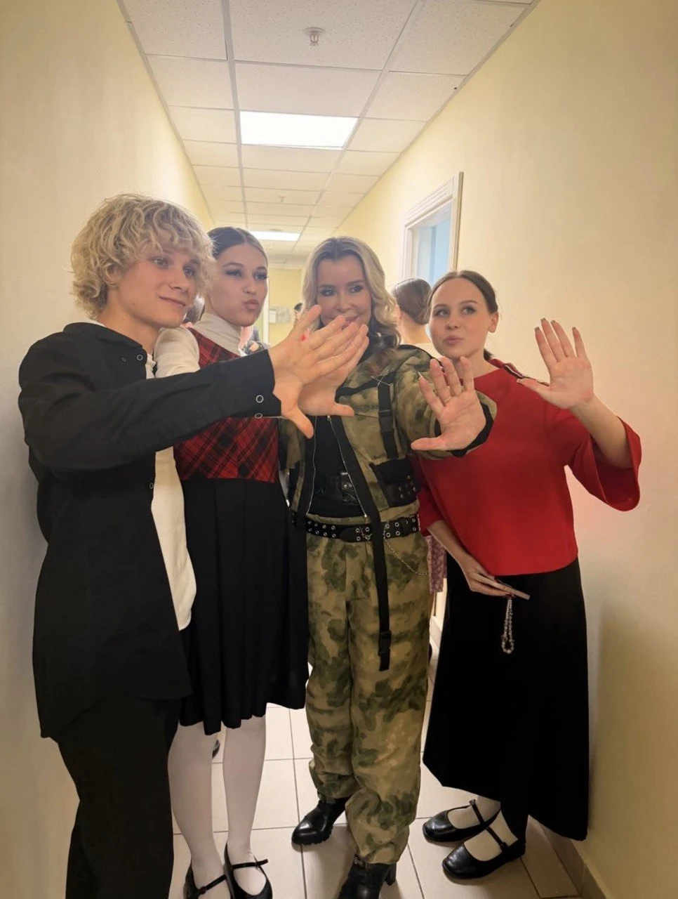
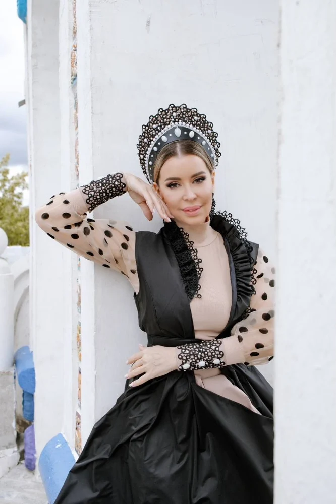
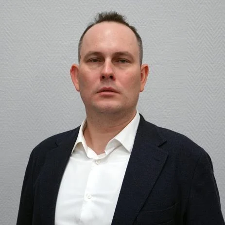
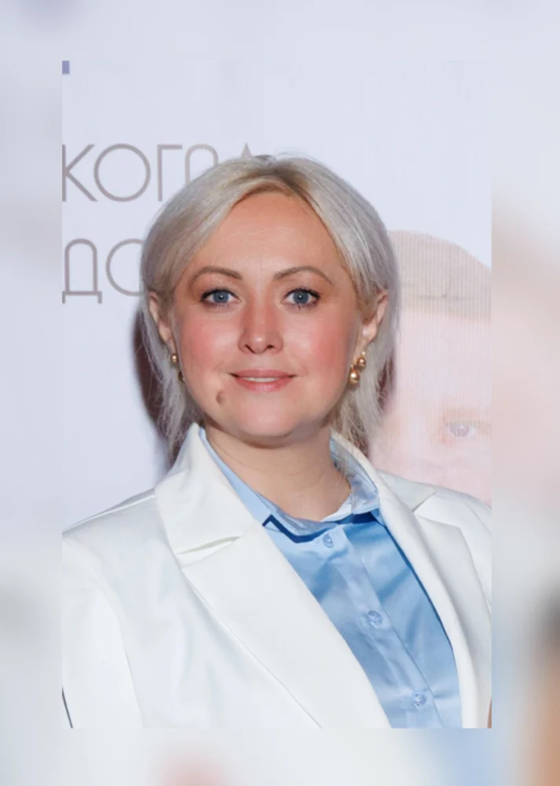
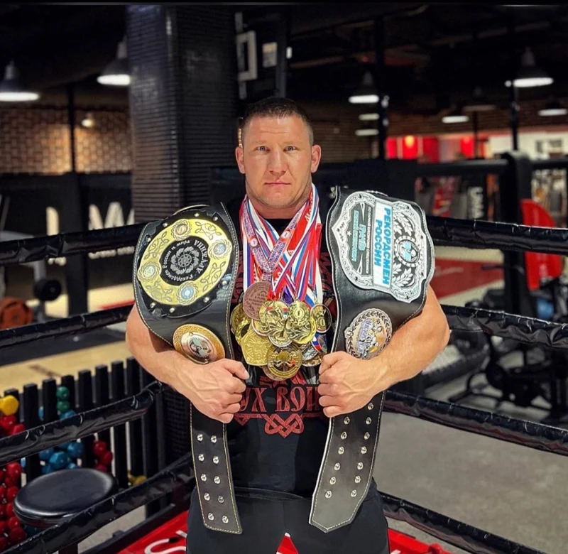
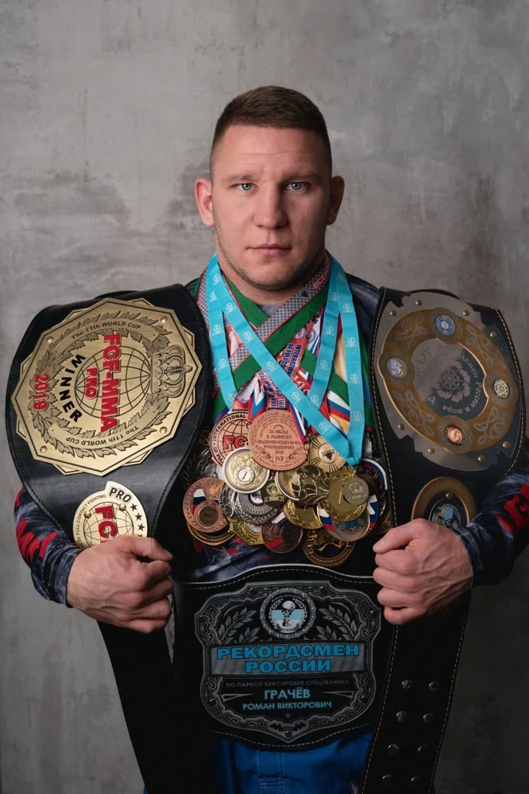
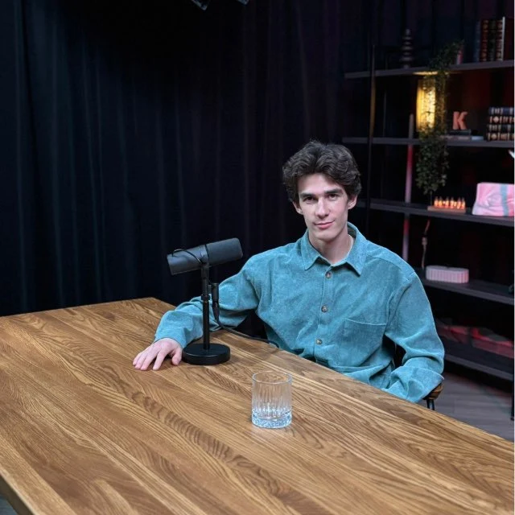
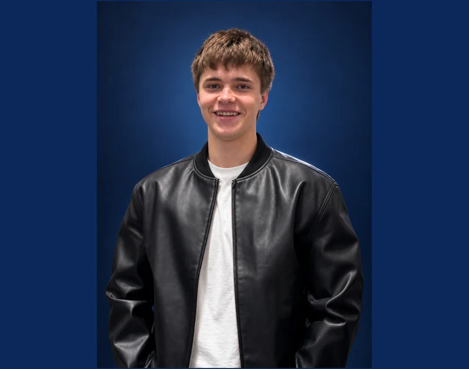

Стоп Террорист на сцене
Песня и её главный жест в концертном исполнении.

СТОПВСЕРОССИЙСКИЙ МОЛОДЁЖНЫЙ ПРОЕКТ
Жизнь сильнее ненависти
Музыка знания и открытый разговор
Вместе против идеологии терроризма
Одна ладонь
Общая позиция
«Стоп Террорист» объединяет творчество и просвещение, чтобы помочь молодым людям распознавать угрозы и осознанно отвергать насилие.
Идея Лии Волянской выросла из её творческой и общественной деятельности. В основе проекта — ценность человеческой жизни, поддержка друг друга и знания, которые помогают сохранять спокойствие.

Жест, который нас объединяетОткрытая ладонь — наш знак «стоп» идеологии терроризма. Он появился в песне и клипе, а теперь объединяет людей на встречах и выступлениях.
Посмотреть историю в кадрахПрограмма акции «Знать и не бояться» соединяет экспертные встречи, творчество и практику. Состав блоков подбирается под аудиторию и площадку.
Урок безопасности: цифровые угрозы, телефонное мошенничество, обращение за помощью и обсуждение практических ситуаций.
Работа с педагогами: обмен опытом и материалы для продолжения профилактических занятий.
Встречи психолога с родителями о доверии в семье, сложных эмоциях и разговоре с ребёнком.
Обсуждение цифровых рисков и манипуляций помогает внимательнее относиться к тому, что происходит с близкими.
Спортивный блок развивает самообладание, спокойную оценку ситуации и командную работу.
В творческой мастерской участники создают свой мерч с контуром ладони — личным напоминанием о бдительности.
Концерт Лии Волянской, общение и совместные фото и видео с участниками.
Короткие цифровые ролики продолжают разговор о безопасности за пределами площадки. Анонимный чат-бот и серия «Лия в ИИ-проекции» предусмотрены планом развития проекта.
Пилотная программа: дата, длительность и набор блоков согласуются с организаторами.
Связаться через VKКлип «Стоп Террорист», живые выступления и моменты, в которых рождается общее дело.
Песня и её главный жест в концертном исполнении.
Фрагмент выступления из личного архива Лии.
НИУ ВШЭ рассказывает о памятной встрече ко Дню солидарности в борьбе с терроризмом. Среди выступавших — основатель проекта Лия Волянская.
↗Творчество, экспертиза, спорт и цифровые технологии встречаются в одной команде.

Певица, общественный деятель и основатель проекта «Стоп Террорист».
Через музыку и встречи с молодёжью Лия говорит о неприятии насилия и ценности человеческой жизни. Её авторская песня «Стоп Террорист» прозвучала на форуме «Современные системы безопасности. Антитеррор».
Сообщество проекта
Эксперт по противодействию идеологии терроризма в образовательной среде. Кандидат химических наук, доцент МГПУ.

Организация проекта и координация работы команды.


Спортивный блок, самообладание и командная работа.
Сценарии, видеоролики, цифровые площадки и информационное сопровождение.


Следите за проектом, смотрите новые выступления
и делитесь тем, что помогает выбирать жизнь.